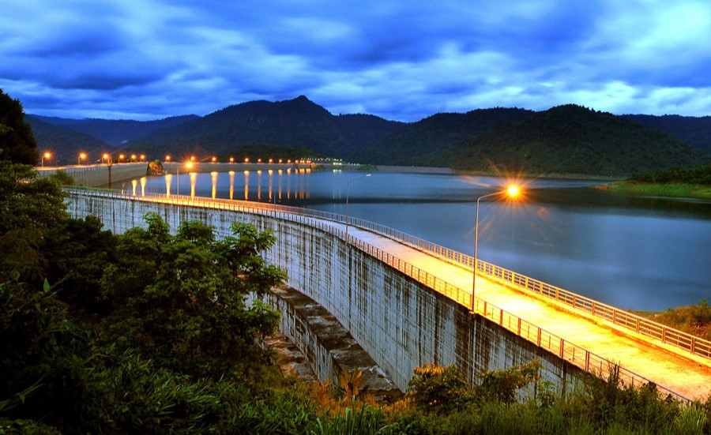
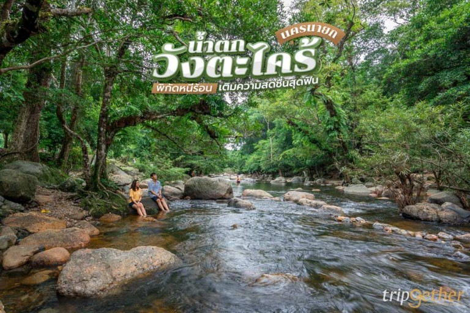
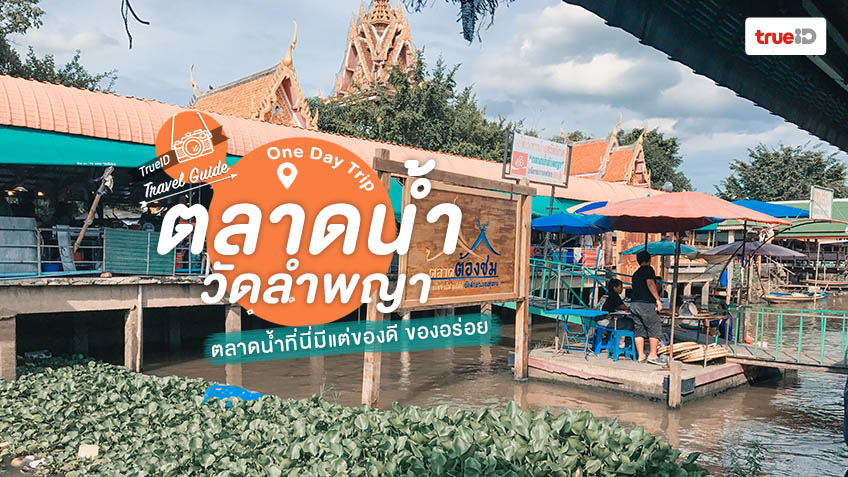

ภาคกลาง




สถานที่ท่องเที่ยวของภาคกลาง
ยอดเขาโมโกจู จังหวัดกำแพงเพชร
ยอดเขาสูงที่ตั้งอยู่ภายในอุทยานแห่งชาติแม่วงก์ อีกหนึ่งสถานที่เหมาะสำหรับนักท่องเที่ยวที่ชื่นชอบการผจญภัย เพราะเมื่อไปถึงยอดเขา นักท่องเที่ยวจะเจอกับทิวทัศน์สวยงามตระการตา โดยเส้นทางพิชิตยอดดอยโมโกจูจะเปิดให้นักท่องเที่ยวเข้าชมเพียง 4 เดือนเท่านั้น คือ เดือนพฤศจิกายน-กุมภาพันธ์ ทั้งนี้ นักท่องเที่ยวจะต้องทำการติดต่อเจ้าหน้าที่อุทยานอย่างน้อย 1 สัปดาห์ เพื่อเป็นผู้นำทางขึ้นเพื่อความปลอดภัย อีกทั้งยังต้องค้างแรมกลางป่า และใช้เวลาไป-กลับประมาณ 5 วัน 4 คืน ดังนั้นนักท่องเที่ยวควรฟิตร่างกายมาให้พร้อม
อุทยานวังตะไคร้ จังหวัดนครนายก
ที่เที่ยวนครนายกยอดนิยม มีลักษณะเป็นน้ำตกชั้นเตี้ย ๆ ไม่สูงมากนัก ตั้งอยู่บนคลองวังตะไคร้ น้ำใสไหลเย็นตลอดทั้งปี มีแก่งหินตลอดลำธาร ช่วยลดความแรงของน้ำได้อย่างดีทีเดียว ทำให้สามารถลงเล่นน้ำได้เกือบตลอดทั้งคลองวังตะไคร้ นอกจากนี้ยังมีกิจกรรมอย่างล่องแพห่วงยางให้ได้สนุกสนานและชุ่มฉ่ำไปกับสายน้ำด้วย ใครอยากกินข้าว นั่งปิกนิก ชมวิวริมน้ำตก ก็เลือกมุมเหมาะ ๆ ใต้ต้นไม้ร่ม ๆ ได้เลย ทั้งนี้ ในช่วงหน้าฝนน้ำจะเยอะเป็นพิเศษ แนะนำให้เล่นอยู่ริมตลิ่งและปฏิบัติตามคำแนะนำของเจ้าหน้าที่
ที่อยู่ของอุทยานวังตะไคร้
ที่อยู่ : หมู่ 1 ตำบลสาริกา อำเภอเมืองนครนายก จังหวัดนครนายก
เว็บไซต์ : www.wangtakrai.com
พิกัด
ที่อยู่ : หมู่ 1 ตำบลสาริกา อำเภอเมืองนครนายก จังหวัดนครนายก
เว็บไซต์ : www.wangtakrai.com
พิกัด
ตลาดน้ำวัดลำพญา จังหวัดนครปฐม
ตลาดที่อยู่ติดริมแม่น้ำนครชัยศรี (ท่าจีน) มีร้านค้ากว่า 50 ร้าน จำหน่ายสินค้าหลากหลายชนิด ทั้งของกิน สินค้าพื้นเมือง พืชผัก-ผลไม้ พ่อค้าแม่ค้าก็เป็นชาวบ้านในชุมชนที่นำพืชผลของตัวเองมาจำหน่าย ราคาจึงไม่สูงมากนัก บางส่วนตั้งร้านค้าอยู่บนแพ บางส่วนอยู่ในเรือ มีที่นั่งให้นักท่องเที่ยวได้นั่งกินอาหารกันแบบชิล ๆ
ที่อยู่ของตลาดน้ำวัดลำพญา
ที่อยู่ :วัดลำพญา ตำบลลำพญา อำเภอบางเลน จังหวัดนครปฐม
เปิดให้เข้าเที่ยวชม : ทุกวันเสาร์-อาทิตย์ และวันหยุดนักขัตฤกษ์ ตั้งแต่เวลา 08.00-17.00 น.
เฟซบุ๊ก : ตลาดน้ำวัดลำพญา
พิกัด
ที่อยู่ :วัดลำพญา ตำบลลำพญา อำเภอบางเลน จังหวัดนครปฐม
เปิดให้เข้าเที่ยวชม : ทุกวันเสาร์-อาทิตย์ และวันหยุดนักขัตฤกษ์ ตั้งแต่เวลา 08.00-17.00 น.
เฟซบุ๊ก : ตลาดน้ำวัดลำพญา
พิกัด
/div>
วัดบรมราชากาญจนาภิเษกอนุสรณ์ จังหวัดนนทบุรี
ศาสนสถานในศาสนาพุทธ ฝ่ายมหายาน เป็นวัดจีนที่ได้ชื่อว่าสวยงามอันดับต้น ๆ ของเมืองไทย มีสถาปัตยกรรมแบบจีนที่สวยงามโอ่อ่า ราวกับพระราชวังโบราณจำลองจากประเทศจีน ภายในวัดมีสิ่งศักดิ์สิทธิ์มากมาย ไม่ว่าจะเป็นพระศรีศากยมุนีพุทธเจ้า, พระอมิตาภพุทธะ, พระไภษัชยคุรุไวฑูรย์พุทธเจ้า, พระศรีอริยเมตไตรย, พระสกันทโพธิสัตว์, เทพเจ้าไฉ่ซิงเอี้ย, เทพเจ้าไท้ส่วยเอี้ย, พระแม่กวนอิมปางพันมือ, พระอวโลกิเตศวรโพธิสัตว์ และพระมหาสถามปราปต์โพธิสัตว์ เป็นต้น
ที่อยู่ของวัดบรมราชากาญจนาภิเษกอนุสรณ์
ที่อยู่ : 959 หมู่ 4 ถนนเทศบาล 9 ตำบลโสนลอย อำเภอบางบัวทอง จังหวัดนนทบุรี
เฟซบุ๊ก : วัดบรมราชากาญจนาภิเษกอนุสรณ์ 敕賜普頌皇恩寺
เว็บไซต์ : www.watboromracha.com
พิกัด
ที่อยู่ : 959 หมู่ 4 ถนนเทศบาล 9 ตำบลโสนลอย อำเภอบางบัวทอง จังหวัดนนทบุรี
เฟซบุ๊ก : วัดบรมราชากาญจนาภิเษกอนุสรณ์ 敕賜普頌皇恩寺
เว็บไซต์ : www.watboromracha.com
พิกัด
นางสาวธิดาวัลย์ โอษฐ์งาม
นางสาวภัคริตรา ศรสุนทร
นายธนนนท์ พิกุลขาว
สาขาวิชาคอมพิวเตอร์ธุรกิจ วิทยาลัยเทคนิคสมุทรสงคราม